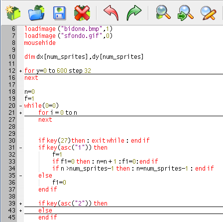

Folding
sdlBasic
editor supports folding based upon indentation. The fold point
markers can be clicked to expand and contract folds. Ctrl+Shift+Click
in the fold margin will expand or contract all the top level folds.
Ctrl+Click on a fold point to toggle it and perform the same operation
on all children. Shift+Click on a fold point to show all children.
